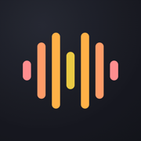
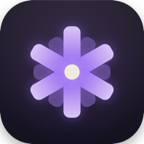
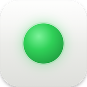

GGG Shop
Independent audio software for people who make records — stream a mix, sketch an idea, play chords, keep the rig alive.
Catalog
4 products · macOS & iOS-
LL-01 · Plugin
ListenLink
Stream your master bus to a web link anyone can open in a browser — no accounts, no apps for the listener.
- Format
- VST3 · AU
- Platform
- macOS
- Version
- v0.9.1 · Live
-

NB-02 · iOS appNotable
Voice memos you can transpose — record, pitch-shift without changing timing, drop markers, export MIDI.
- Format
- App Store
- Platform
- iPhone
- Version
- v1.1 · Live
-

BL-03 · InstrumentBlossom
One finger, full chords — hold a chord key, play a note, and the voiced chord goes straight to your synth.
- Format
- Mac app · AU · VST3
- Platform
- macOS
- Version
- v2.1.1 · Live
-

UD-04 · UtilityUAD Doctor
Your UAD DSP load as a dot in the menu bar, warnings before the -38 error hits, and one-click recovery when your DAW freezes.
$ brew install --cask gleyzeddonut/tap/uad-doctor- Format
- Menu bar app
- Works with
- UAD-2 · Apollo
- Version
- v1.4.8 · Live